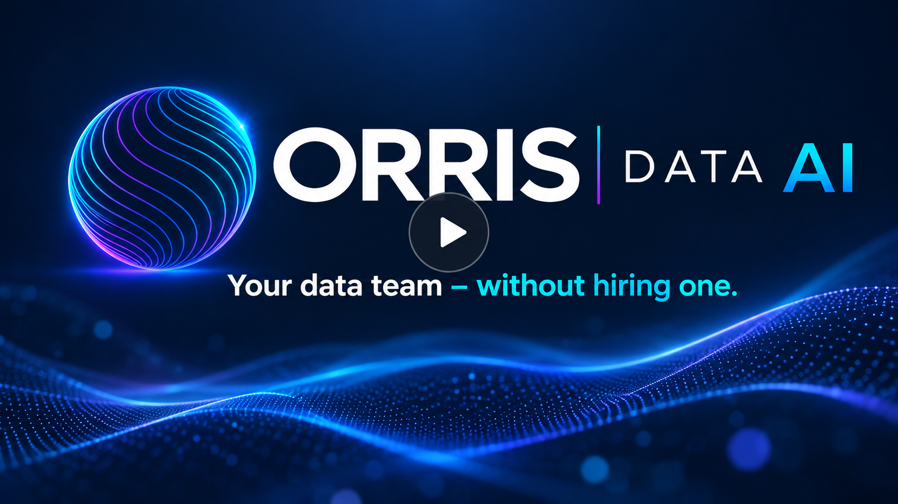

Before Orris
Hours every week preparing reports.
Data is exported, cleaned, combined and checked before anyone can review what actually happened.

Orris helps small and mid-sized businesses automate manual reporting, see what is happening across the business, and get useful answers — without hiring a data team.
Orris is not about giving you more reports. It is about changing what your team spends its time doing — from preparing information to acting on it.
Data is exported, cleaned, combined and checked before anyone can review what actually happened.
Recurring reporting is automated so your team can spend its time understanding the numbers instead of assembling them.
By the time the numbers are consolidated, there may be little time left to understand what caused the deviation.
Managers can focus on the projects that need attention before the next formal review.
Growing businesses often reach the point where spreadsheets and disconnected systems are no longer enough — but hiring a full data team is not realistic either.
Someone exports files, cleans them, combines them and checks the numbers before management can see the result.
Sales, finance, operations and project information sit across spreadsheets and business systems.
“Why did margin drop?” or “Which projects are at risk?” can require another spreadsheet exercise.
Cost overruns, delays, weak customers and margin erosion may only become obvious during a review.
You need better visibility, but a dedicated data engineer or BI team feels too expensive or too early.
Useful answers require your definitions, KPIs, data and operational context — not generic answers from the internet.
You do not need a large technology project. Orris starts with the reporting, visibility or decision problem that is costing your business the most time or money.
In a short conversation, we look at how your business currently creates reports, where information gets stuck, and where automation or better visibility could make a practical difference.
Orris starts where construction and project-based businesses feel the most pressure: project profitability, cost control, labor, invoices, schedules and reporting.
Bring budget, actual cost, labor and project information together so managers can focus on projects that need attention.
Connect labor, schedules, tasks and operational information to identify unusual trends and projects that deserve attention.
Create a clearer view of invoices, subcontractor costs and project commitments without rebuilding the same spreadsheets every month.
Watch how a business question moves from KPI to cause — and into a practical next step.
Orris is designed around the questions business managers actually ask, not around technology for technology's sake.
Orris is useful when it removes recurring work, makes important numbers easier to trust, or helps a manager see a problem earlier.
Spend less time copying, cleaning, reconciling and rebuilding recurring reports.
Spot cost overruns, delays, weak performance and other exceptions before the next review.
Give managers a consistent way to explore the questions that keep coming back.
Tell us what takes too much time, what is difficult to see, or what business question you keep asking. We'll help identify a practical starting point.